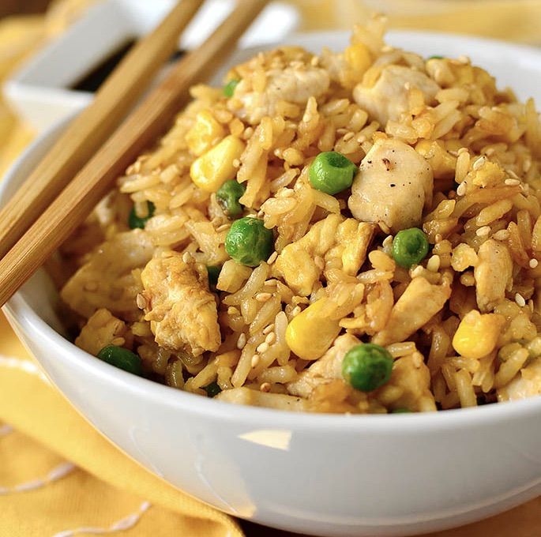

Fried Rice
The best way to use old rice

Ingredients
- 2 cups old cold rice
- 1 cup carrots
- 2 eggs
- 1 chicken breast
- Salt
- Pepper
- Soy sauce
Instructions
- On a side pan cook carrots in olive oil
- Add chicken to this and cook until chicken is thoroughly cooked
- Scramble 2 eggs in a large pan and cook in butter
- When eggs are well cooked, add all of the rice and stir
- Add chicken/carrots, soy sauce, salt, and pepper
- Mix well
- Throw some chopped green onions on top and enjoy!